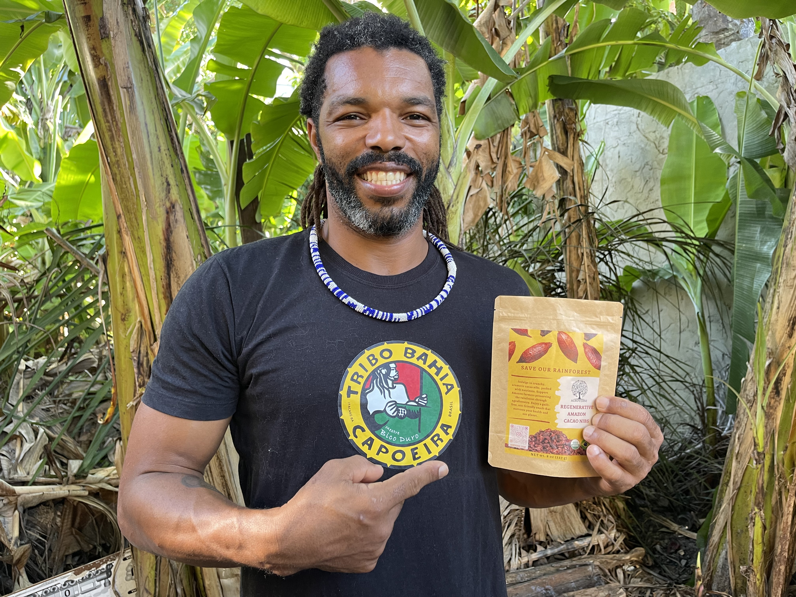
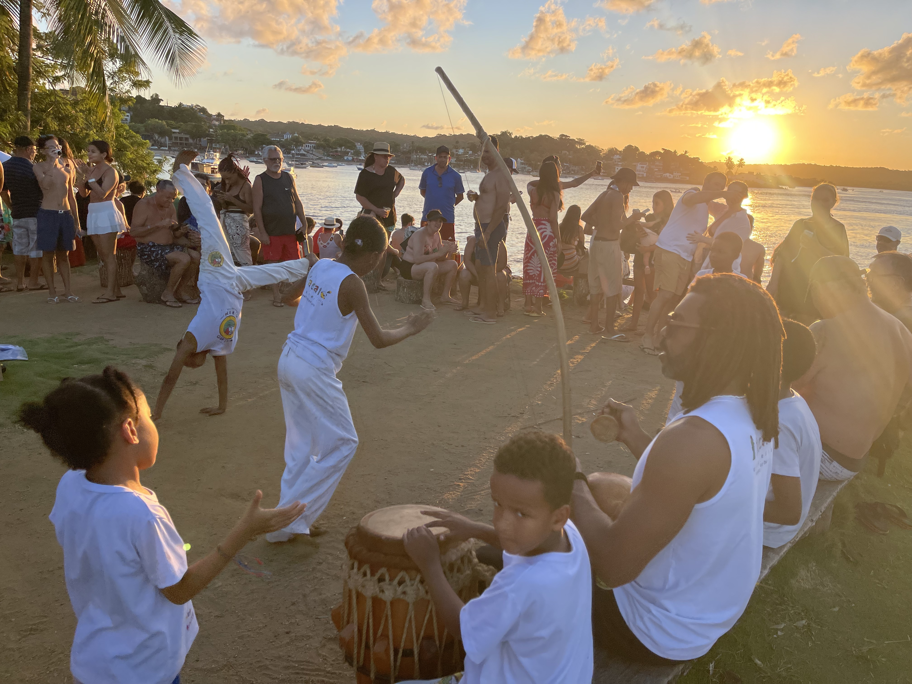
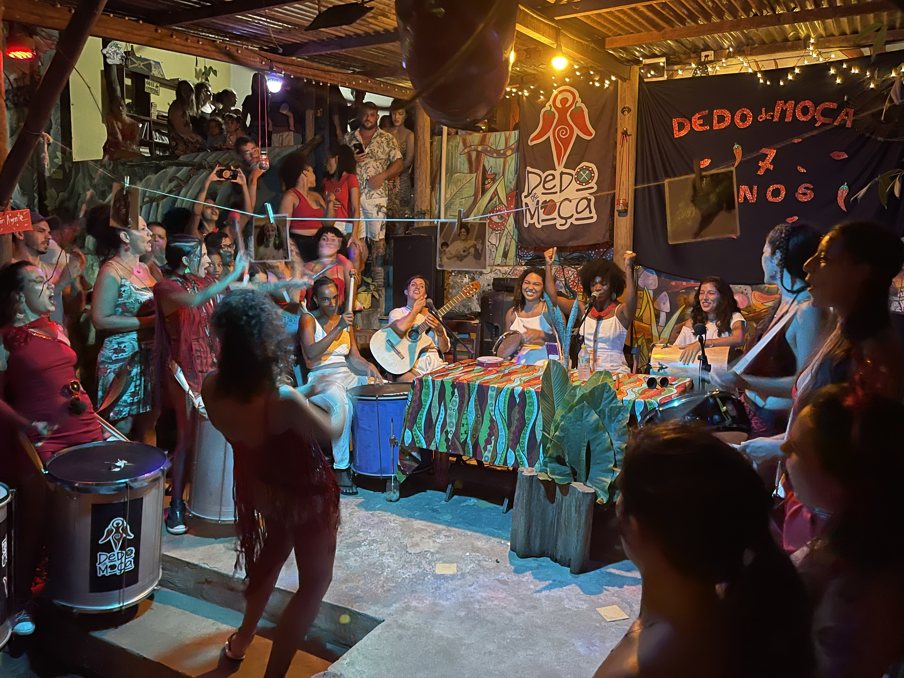
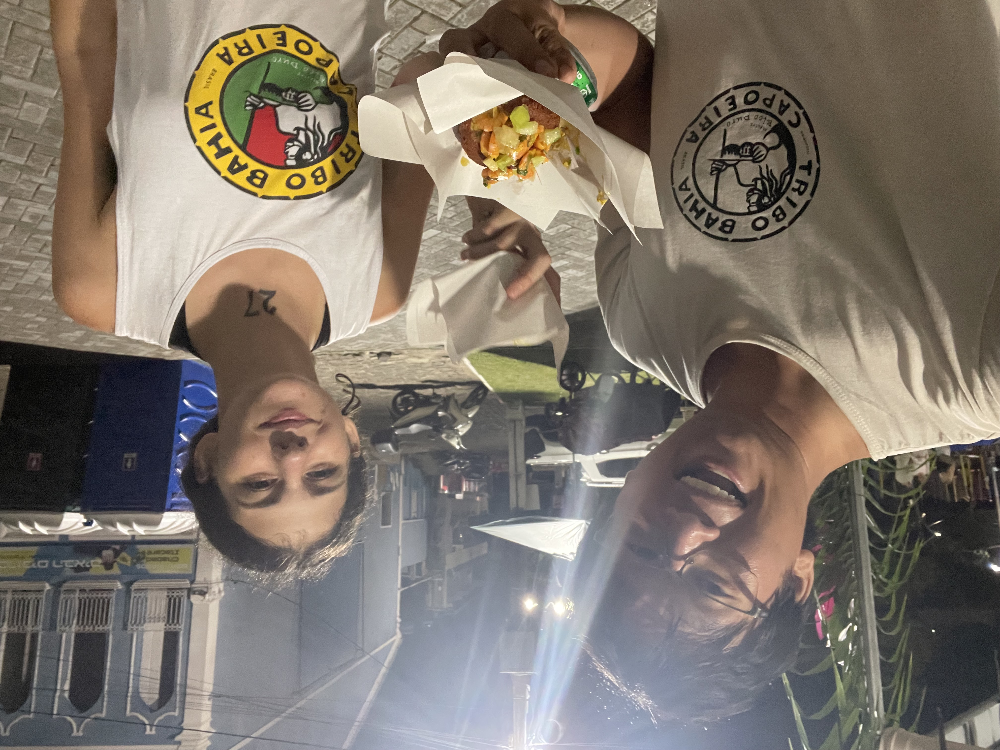
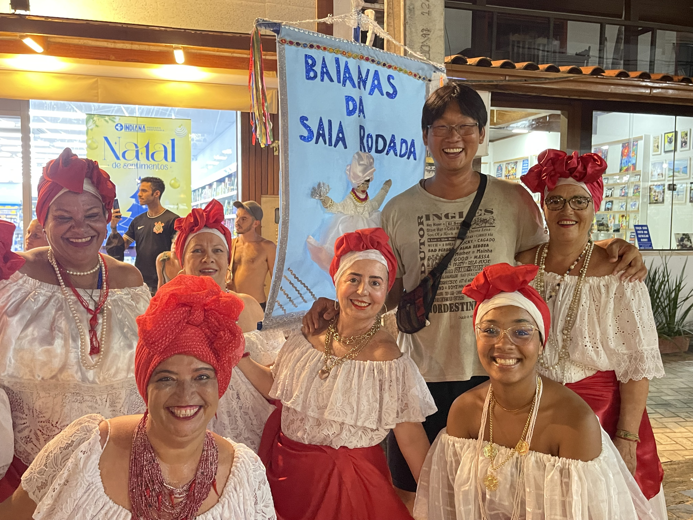
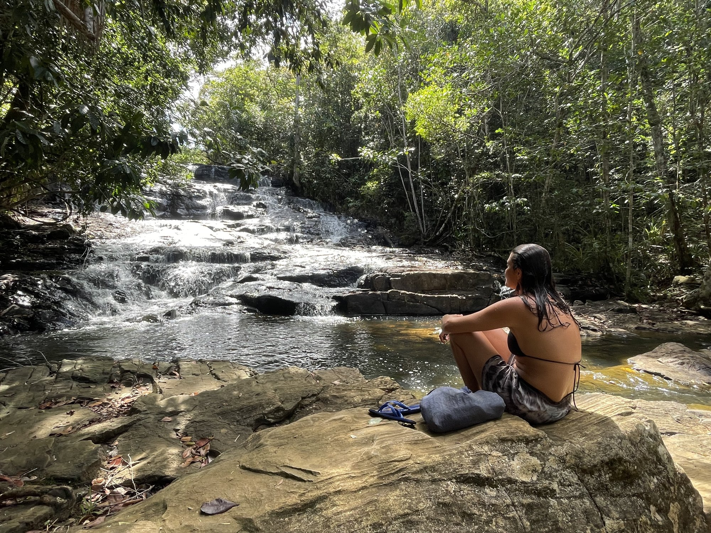

Capoeira, Samba & Forró in Bahia
Immerse yourself in the living culture of Bahia in Itacaré, the small town at the mouth of the Rio de Contas where Afro-Brazilian traditions are not a performance but a daily practice. Capoeira rodas form in the square, samba spills onto the sand, and the cacao that becomes Agroverse's ceremonial cacao is harvested a few kilometers from where the children of Tribo Mirim train — same coast, same soil, the same community.
Capoeira with Mestre Bico Duro at Tribo Bahia Mirim: Learn the Afro-Brazilian martial art that fuses dance, acrobatics, music, and history under Mestre Bico Duro, who leads Tribo Bahia Mirim and whose work with Itacaré's children is the heart of this stop. Capoeira lives in the roda — the circle of players, musicians, and onlookers — led by the single-string berimbau, which sets the rhythm and calls the game. You'll train the fundamental moves, learn the songs, and sit inside a real roda.
Can't make it to Itacaré yet? Practice with Mestre Bico Duro from anywhere at capoeira.agroverse.shop — 45-minute solo sessions pairing his move library with curated berimbau music, plus the roda songbook with lyrics and translations. Donation-supported; 100% of net proceeds (minus transfer fees) fund the Tribo Bahia Mirim after-school capoeira program for kids in Itacaré.
Samba da Roda: On Saturday evenings, after the weekly capoeira roda in Praça Santos Dumont, the capoeiristas of Itacaré walk down to Praia da Coroa and the roda becomes a samba. Multiple groups and masters, pandeiros and voices, the night ending barefoot in the sand — the whole community, back to its Afro-Brazilian roots.
Forró Dancing: Experience forró, a traditional Brazilian dance style that brings communities together in celebration. With its distinctive accordion-driven rhythm, forró creates an atmosphere of warmth and connection that embodies the spirit of Bahia.
Beyond the music: ride a boat up the Rio de Contas to Cachoeira do Cleandro, a waterfall reached only by river; eat acarajé from the traditional baianas de tabuleiro in their white lace; and come to understand the Afro-Brazilian heritage — Catholic and Candomblé woven together — that shapes Bahia's identity. These experiences connect you to the rhythms, movements, and community spirit that make this stretch of coast so singular.
Recorded with Mestre Bico Duro and the community of Tribo Bahia Mirim — the roda, the batizado, and the samba as they actually happen in Itacaré, plus the cacao farm whose beans become Agroverse's ceremonial cacao.
More from the community — the full move library, roda songbook, and berimbau playlists — at capoeira.agroverse.shop. Every session there supports the Tribo Bahia Mirim after-school program.






When to visit: Agroverse organises Itacaré farm visits in September, when the Bahia cacao harvest (safra) is in season — pods ripening on the cabruca trees, fermentation and sun-drying (barcaças) in full swing, and the farming community at its most active.